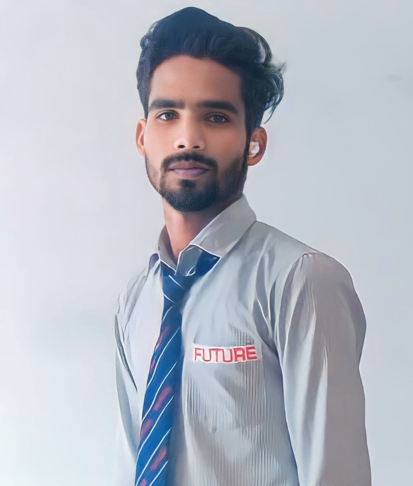

About Me
Abhinay Pandey
I am a Full-Stack Developer with a strong foundation in both front-end and back-end technologies. My work focuses on creating modern, scalable, and user-friendly web applications using tools like JavaScript, React, Node.js, MongoDB and more.
I’ve gained hands-on experience through internships and freelance work, developing dynamic websites and APIs, optimizing performance, and collaborating in Agile teams. Whether it’s building a UI or engineering a backend system, I enjoy bringing digital ideas to life.
My strengths include clean code practices, problem-solving, and a constant eagerness to learn and adapt. I'm passionate about turning ideas into real-world applications that deliver value and great user experience.
Outside of coding, I’m interested in UI/UX design, open-source projects, and staying current with new web technologies. I'm looking for opportunities to grow as a developer and contribute to impactful tech solutions.
